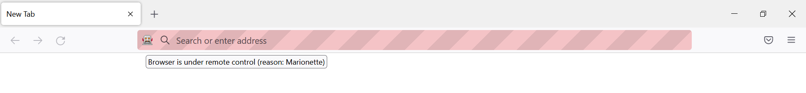

Webscraping with RSelenium
Automate your browser actions
LISER
2022-09-20
Introduction
Do you really need scraping?
Before scraping: is there an API?
if yes, is there a package?
if yes, use the package
if no, build the API queries yourself with
{httr2}
if no, scrape (politely)
Introduction
Scraping can be divided in two steps:
- getting the HTML that contains the information
- cleaning the HTML to extract the information we want
These 2 steps don’t necessarily require the same tools, and shouldn’t be made at the same time.
Introduction
Here, we will focus on the first step: how to obtain the HTML code you need on dynamic pages?
Static and dynamic pages
Static and dynamic pages
The web works with 3 languages:
- HTML: content and structure of the page
- CSS: style of the page
- JavaScript: interactions with the page
Static and dynamic pages
The web works with 3 languages:
HTML: content and structure of the page
CSS: style of the page
JavaScript: interactions with the page
Static vs dynamic
Static webpage:
- all the information is loaded with the page;
- changing a parameter modifies the URL
Examples: Wikipedia, IMDB.
Dynamic webpage: the website uses JavaScript to fetch data from their server and dynamically update the page.
Example: Premier League stats.
Why is it harder to do webscraping with dynamic pages?
Webscraping a static website can be quite simple:
- you get a list of URLs;
- download the HTML for each of them;
- read and clean the HTML
and that’s it.
This is easy because you can differentiate two pages with different content just by looking at their URL.
Example:
Of course, static webscraping can be challenging because we have to write good loops, good error handling, the HTML itself can be hard to clean, etc.
But in dynamic pages, there’s no obvious way to see that the inputs are different (see Premier League stats).
So it seems that the only way to get the data is to go manually through all pages to get the HTML.
350h and 3 RAs later…
(R)Selenium
Idea
Idea: control the browser from the command line.
“I wish I could click on this button to open a modal”
Almost everything you can do “by hand” in a browser, you can reproduce with Selenium:
open a browser
click on something
enter values
go to previous/next page
refresh the page
get all the HTML that is currently displayed
open()/navigate()clickElement()sendKeysToElement()goBack()/goForward()refresh()getPageSource()
Get started
Get started
In the beginning there was light rsDriver():
This will print a bunch of messages and open a “marionette browser”.

Get started
From now on, everything we do is calling <function>() starting with remote_driver$1.

Exercise 1
Exercise 1
Objective: get the list of core contributors to R located here.
How would you do it by hand?
- open the browser;
- go to https://r-project.org;
- in the left sidebar, click on the link “Contributors”;
- and voilà!
How can we do these steps programmatically?
Open the browser and navigate

Click on “Contributors”
This requires two things:
- find the element
- click on it
How to find an element?
Humans -> eyes
Computers -> HTML/CSS
To find the element, we need to open the console to see the structure of the page:
- right-click -> “Inspect”
Ctrl+Shift+C

Then, hover the element we’re interested in: the link “Contributors”.

How can we find this with RSelenium?
-> findElement
- class name ❌
- id ❌
- name ❌
- tag name ❌
- css selector ✔️
- link text ✔️
- partial link text ✔️
- xpath ✔️
All of these work:
remote_driver$
findElement("link text", "Contributors")$
clickElement()
remote_driver$
findElement("partial link text", "Contributors")$
clickElement()
remote_driver$
findElement("xpath", "/html/body/div/div[1]/div[1]/div/div[1]/ul/li[3]/a")$
clickElement()
remote_driver$
findElement("css selector", "div.col-xs-6:nth-child(1) > ul:nth-child(6) > li:nth-child(3) > a:nth-child(1)")$
clickElement()Tip
You can check that you found the right element by highlighting it with highlightElement().
We are now on the right page!

Last step: obtain the HTML of the page.
Do we read the HTML and extract the information in the same script?
No!
Instead, we save the HTML in an external file, and we will be able to access it in another script (and offline) to manipulate it as we want.
Click here to see the results.
Exercise 2: a harder & real-life example
The previous example was not a dynamic page: we could have used the link to the page and apply webscraping methods for static webpages.
Let’s now dive into a more complex example, where RSelenium is the only way to obtain the data.
Before using RSelenium
Using RSelenium is slower than using “classic” scraping methods, so it’s important to check all possibilities before using it.
Use Selenium if:
the HTML you want is not directly accessible, i.e needs some interactions (clicking on a button, connect to a website…)
the URL doesn’t change with the inputs
you can’t access the data directly in the “network” tab of the console
Interesting read: the Ethical Scraper
Example: Sao Paulo immigration museum
ASK MARTIN FIRST
Appendix
Appendix
For reference, here’s the code to extract the list of contributors:
library(rvest)
html <- read_html("contributors.html")
bullet_points <- html %>%
html_elements(css = "div.col-xs-12 > ul > li") %>%
html_text()
blockquote <- html %>%
html_elements(css = "div.col-xs-12.col-sm-7 > blockquote") %>%
html_text() %>%
strsplit(., split = ", ")
blockquote <- blockquote[[1]] %>%
gsub("\\r|\\n|\\.|and", "", .)
others <- html %>%
html_elements(xpath = "/html/body/div/div[1]/div[2]/p[5]") %>%
html_text() %>%
strsplit(., split = ", ")
others <- others[[1]] %>%
gsub("\\r|\\n|\\.|and", "", .)
all_contributors <- c(bullet_points, blockquote, others)Appendix
[1] "Douglas Bates" "John Chambers" "Peter Dalgaard"
[4] "Robert Gentleman" "Kurt Hornik" "Ross Ihaka"
[7] "Tomas Kalibera" "Michael Lawrence" "Friedrich Leisch"
[10] "Uwe Ligges" "Thomas Lumley" "Martin Maechler"
[13] "Sebastian Meyer" "Paul Murrell" "Martyn Plummer"
[16] "Brian Ripley" "Deepayan Sarkar" "Duncan Temple Lang"
[19] "Luke Tierney" "Simon Urbanek" "Valerio Aimale"
[22] "Suharto Anggono" "Thomas Baier" "Gabe Becker"
[25] "Henrik Bengtsson" "Roger Biv" "Ben Bolker"
[28] "David Brahm" "Göran Broström" "Patrick Burns"
[31] "Vince Carey" "Saikat DebRoy" "Matt Dowle"
[34] "Brian D’Urso" "Lyndon Drake" "Dirk Eddelbuettel"
[37] "Claus Ekstrom" "Sebastian Fischmeister" "John Fox"
[40] "Paul Gilbert" "Yu Gong" "Gabor Grothendieck"
[43] "Frank E Harrell Jr" "Peter M Haverty" "Torsten Hothorn"
[46] "Robert King" "Kjetil Kjernsmo" "Roger Koenker"
[49] "Philippe Lambert" "Jan de Leeuw" "Jim Lindsey"
[52] "Patrick Lindsey" "Catherine Loader" "Gordon Maclean"
[55] "Arni Magnusson" "John Maindonald" "David Meyer"
[58] "Ei-ji Nakama" "Jens Oehlschägel" "Steve Oncley"
[61] "Richard O’Keefe" "Hubert Palme" "Roger D Peng"
[64] "José C Pinheiro" "Tony Plate" "Anthony Rossini"
[67] "Jonathan Rougier" "Petr Savicky" "Günther Sawitzki"
[70] "Marc Schwartz" "Arun Srinivasan" "Detlef Steuer"
[73] "Bill Simpson" "Gordon Smyth" "Adrian Trapletti"
[76] "Terry Therneau" "Rolf Turner" "Bill Venables"
[79] "Gregory R Warnes" "Andreas Weingessel" "Morten Welinder"
[82] "James Wettenhall" "Simon Wood" " Achim Zeileis"
[85] "J D Beasley" "David J Best" "Richard Brent"
[88] "Kevin Buhr" "Michael A Covington" "Bill Clevel"
[91] "Robert Clevel," "G W Cran" "C G Ding"
[94] "Ulrich Drepper" "Paul Eggert" "J O Evans"
[97] "David M Gay" "H Frick" "G W Hill"
[100] "Richard H Jones" "Eric Grosse" "Shelby Haberman"
[103] "Bruno Haible" "John Hartigan" "Andrew Harvey"
[106] "Trevor Hastie" "Min Long Lam" "George Marsaglia"
[109] "K J Martin" "Gordon Matzigkeit" "C R Mckenzie"
[112] "Jean McRae" "Cyrus Mehta" "Fionn Murtagh"
[115] "John C Nash" "Finbarr O’Sullivan" "R E Odeh"
[118] "William Patefield" "Nitin Patel" "Alan Richardson"
[121] "D E Roberts" "Patrick Royston" "Russell Lenth"
[124] "Ming-Jen Shyu" "Richard C Singleton" "S G Springer"
[127] "Supoj Sutanthavibul" "Irma Terpenning" "G E Thomas"
[130] "Rob Tibshirani" "Wai Wan Tsang" "Berwin Turlach"
[133] "Gary V Vaughan" "Michael Wichura" "Jingbo Wang"
[136] "M A Wong"